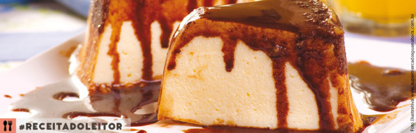

Voltar
PUDIM SORVETE

Pudim Sorvete
Tipo da Receita: Sobremesa
Dificuldade: media
Ingredientes
- Lata de Leite Condensado
- 2 Colheres de Maisena
- 500ml de Leite
- 4 ovos
- 1 Lata de Creme de Leite.
- Calda:
- 3 Colheres (sopa) de chocolate em pó
- 100ml de leite
Modo de fazer
- Bata no liquidificador o leite condensado, a maisena, o leite e as gemas.
- Depois coloque em uma panela e leve ao fogo até formar um creme, mexendo sempre, deixe esfriar.
- Bata 4 claras em neve, misture o creme de leite com as claras, depois misture com o creme (feito no fogo) e
bata na batedeira por 5 minutos.
- Calda: Misture o chocolate com o leite e leve ao fogo mexendo sempre até formar uma calda.
- Montagem: Espalhe em uma forma de pudim 1º a calda, depois o creme e leve ao congelador/freezer.